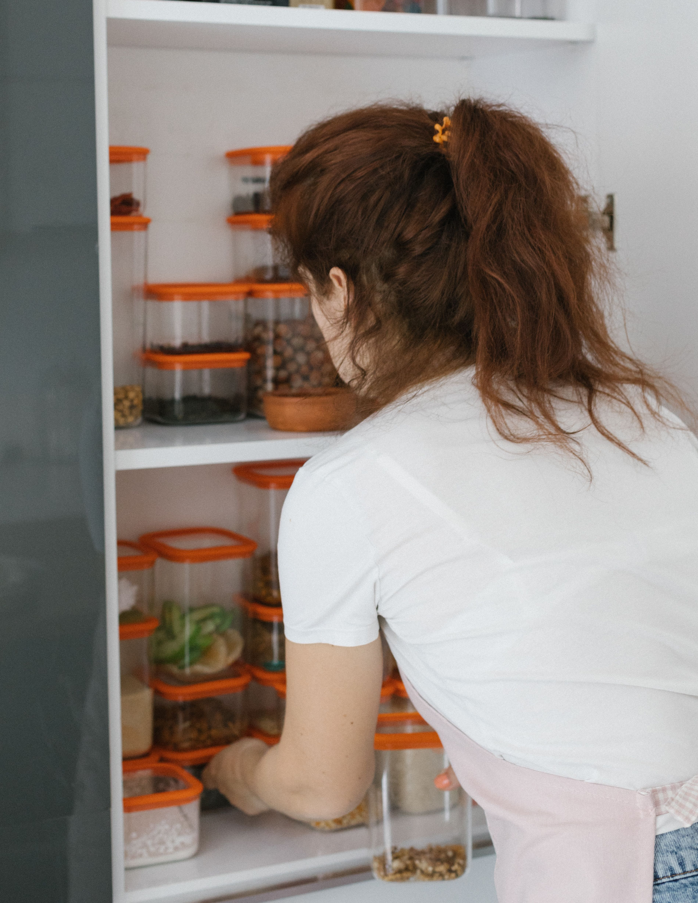

Registo de produtos
Permite adicionar os produtos alimentares adquiridos e registar as respetivas datas de validade.
MENOS DESPERDÍCIO. MAIS CONSCIÊNCIA.
Organiza os teus alimentos, acompanha as datas de validade e transforma os teus hábitos de consumo.

Organiza os teus alimentos
PRODUTOS NA MINHA COZINHA

01 / SOBRE NÓS
O Expyro é uma aplicação desenvolvida para ajudar os utilizadores a gerir os produtos alimentares que têm em casa, controlar as respetivas datas de validade e reduzir o desperdício alimentar.
Através da aplicação, é possível registar os produtos adquiridos, acompanhar as suas datas de validade e receber notificações quando estão próximos de expirar.
Com base nos hábitos de consumo, a aplicação procura ainda apresentar sugestões personalizadas, como evitar compras desnecessárias e substituir produtos frequentemente desperdiçados.
Ajudar famílias, estudantes e qualquer pessoa a poupar dinheiro, organizar melhor as suas compras e adotar hábitos de consumo mais conscientes e sustentáveis.
02 / FUNCIONALIDADES
Tudo o que precisas para gerir melhor os alimentos em tua casa.
Permite adicionar os produtos alimentares adquiridos e registar as respetivas datas de validade.
Organiza automaticamente os produtos por ordem crescente de validade.
Envia alertas quando os produtos estão próximos da data de validade.
Permite identificar os produtos mais desperdiçados e acompanhar os hábitos de consumo.
Possibilita organizar futuras compras com base nos produtos consumidos e nas necessidades do utilizador.
Analisa os produtos frequentemente desperdiçados e apresenta alternativas para reduzir quantidades.
03 / A APLICAÇÃO
Uma aplicação pensada para simplificar o teu dia a dia.
Produtos na minha cozinha
Produtos, quantidades e datas de validade.
Produtos mais desperdiçados
Identifica os hábitos de consumo.
Compras conscientes
Uma lista de compras adaptada às tuas necessidades.
04 / OBJETIVOS
Evitar que alimentos em boas condições acabem no lixo.
Diminuir compras desnecessárias e aproveitar os produtos disponíveis.
Facilitar o controlo dos alimentos existentes em casa.
Incentivar hábitos de consumo mais responsáveis.
Adaptar as sugestões aos hábitos e necessidades do utilizador.
A NOSSA MISSÃO
05 / EQUIPA
Somos uma equipa de estudantes com o objetivo de desenvolver soluções tecnológicas para responder a problemas do quotidiano.
No âmbito deste projeto, unimos as nossas ideias, conhecimentos e competências para desenvolver uma aplicação que facilite a gestão dos produtos alimentares e contribua para a redução do desperdício.
Acreditamos que a colaboração, a criatividade e a inovação são essenciais para transformar pequenas ações em grandes mudanças.
Aspeto e design da marca
Escrever textos necessários do site
Acessibilidade no design do Website/app
Programação do Website